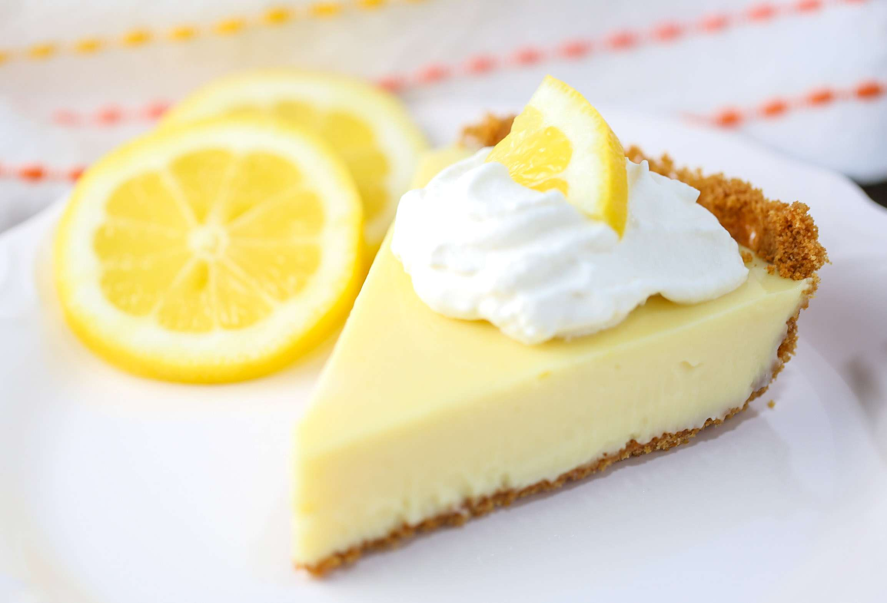

El clasico Lemon Pie
Es el preferido de los que les gusta lo dulce, pero no lo empalagoso. El Lemon pie es una tarta, es decir, una base de masa y un relleno. Como su nombre lo indica, está hecha con jugo de limón, azúcar y huevos. Todo eso mezclado hace el famoso custard, el relleno cremoso amarillo que es tan típico del Lemon pie.
Ingredientes para la masa
- 200 g harina 0000,
- 50 g de azúcar,
- 1 huevo
- 100 g de manteca.
Ingredientes para la crema
>- 150 cc. de jugo de limon
- 1 cucharada de ralladura de limon
- 4 yemas
- Leche condensada
Ingredientes para el merengue
>- 240gr de azucar
- 3 claras
Instrucciones
- Procesar o mezclar ligeramente la harina, el azúcar y la manteca fría cortada en cubitos, hasta formar un arenado.
- Agregar el huevo y unir la masa sin trabajarla mucho
- Envolver en film y llevar a la heladera durante 30 minutos aproximadamente
- Precalentar el horno a temperatura media (180°C).
- Estirar sobre una mesada enharinada y tapizar un molde para tarta desmontable de 22 cm de diámetro.
- SCocinar durante 20 minutos o hasta que comience a dorarse.
- Mezclar la leche condensada con 4 yemas, 150cc de jugo de limón e integrar la ralladura
- Unir bien y verter sobre la masa precocida.
- Cocinar en horno moderado durante 15 minutos.
- Colocar el azúcar en una cacerola pequeña y cubrir apenas con agua.
- Cocinar hasta obtener la textura de un merengue italiano
- Unos minutos antes del punto del almíbar, comenzar a batir las claras.
- Cuando se empiecen a formar picos, añadir gota a gota el almíbar caliente sin dejar de batir hasta que se enfríe
- Decorar con el merengue y gratinar.